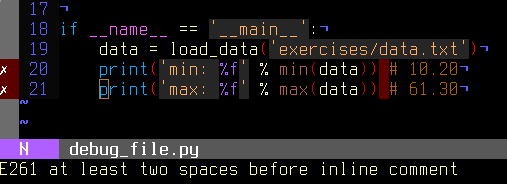

Debugging code#
Author: Gaël Varoquaux
This section explores tools to understand better your code base: debugging, to find and fix bugs.
It is not specific to the scientific Python community, but the strategies that we will employ are tailored to its needs.
Avoiding bugs#
Coding best practices to avoid getting in trouble#
We all write buggy code. Accept it. Deal with it.
Write your code with testing and debugging in mind.
Keep It Simple, Stupid (KISS).
What is the simplest thing that could possibly work?
Don’t Repeat Yourself (DRY).
Every piece of knowledge must have a single, unambiguous, authoritative representation within a system.
Constants, algorithms, etc…
Try to limit interdependencies of your code. (Loose Coupling)
Give your variables, functions and modules meaningful names (not mathematics names)
pyflakes: fast static analysis#
They are several static analysis tools in Python; to name a few:
Here we focus on pyflakes, which is the simplest tool.
Fast, simple
Detects syntax errors, missing imports, typos on names.
Another good recommendation is the flake8 tool which is a combination of
pyflakes and pep8. Thus, in addition to the types of errors that pyflakes
catches, flake8 detects violations of the recommendation in PEP8 style guide.
Integrating pyflakes (or flake8) in your editor or IDE is highly recommended, it does yield productivity gains.
Running pyflakes on the current edited file#
You can bind a key to run pyflakes in the current buffer.
In kate Menu: ‘settings -> configure kate
In plugins enable ‘external tools’
In external Tools’, add
pyflakes:kdialog --title "pyflakes %filename" --msgbox "$(pyflakes %filename)"
In TextMate
Menu: TextMate -> Preferences -> Advanced -> Shell variables, add a shell variable:
TM_PYCHECKER = /Library/Frameworks/Python.framework/Versions/Current/bin/pyflakes
Then
Ctrl-Shift-Vis binded to a pyflakes reportIn vim In your
.vimrc(binds F5 topyflakes):autocmd FileType python let &mp = 'echo "*** running % ***" ; pyflakes %' autocmd FileType tex,mp,rst,python imap <Esc>[15~ <C-O>:make!^M autocmd FileType tex,mp,rst,python map <Esc>[15~ :make!^M autocmd FileType tex,mp,rst,python set autowrite
In emacs In your
.emacs(binds F5 topyflakes):(defun pyflakes-thisfile () (interactive) (compile (format "pyflakes %s" (buffer-file-name))) (define-minor-mode pyflakes-mode "Toggle pyflakes mode. With no argument, this command toggles the mode. Non-null prefix argument turns on the mode. Null prefix argument turns off the mode." ;; The initial value. nil ;; The indicator for the mode line. " Pyflakes" ;; The minor mode bindings. '( ([f5] . pyflakes-thisfile) ) ) (add-hook 'python-mode-hook (lambda () (pyflakes-mode t)))
A type-as-go spell-checker like integration#
In vim
Use the pyflakes.vim plugin:
download the zip file from https://www.vim.org/scripts/script.php?script_id=2441
extract the files in
~/.vim/ftplugin/pythonmake sure your vimrc has
filetype plugin indent on

Alternatively: use the syntastic plugin. This can be configured to use
flake8too and also handles on-the-fly checking for many other languages.
In emacs
Use the flymake mode with pyflakes, documented on https://www.emacswiki.org/emacs/FlyMake and included in Emacs 26 and more recent. To activate it, use
M-x(meta-key then x) and enterflymake-modeat the prompt. To enable it automatically when opening a Python file, add the following line to your .emacs file:(add-hook 'python-mode-hook '(lambda () (flymake-mode)))
Debugging workflow#
If you do have a non trivial bug, this is when debugging strategies kick in. There is no silver bullet. Yet, strategies help.
For debugging a given problem, the favorable situation is when the problem is isolated in a small number of lines of code, outside framework or application code, with short modify-run-fail cycles.
Make it fail reliably. Find a test case that makes the code fail every time.
Divide and Conquer. Once you have a failing test case, isolate the failing code.
Which module.
Which function.
Which line of code.
=> isolate a small reproducible failure: a test case
Change one thing at a time and re-run the failing test case.
Use the debugger to understand what is going wrong.
Take notes and be patient. It may take a while.
Note
Once you have gone through this process: isolated a tight piece of code reproducing the bug and fix the bug using this piece of code, add the corresponding code to your test suite.
Using the Python debugger#
The python debugger, pdb: https://docs.python.org/3/library/pdb.html,
allows you to inspect your code interactively.
Specifically it allows you to:
View the source code.
Walk up and down the call stack.
Inspect values of variables.
Modify values of variables.
Set breakpoints.
Yes, print statements do work as a debugging tool. However to
inspect runtime, it is often more efficient to use the debugger.
Invoking the debugger#
Ways to launch the debugger:
Postmortem, launch debugger after module errors.
Launch the module with the debugger.
Call the debugger inside the module
Postmortem#
Situation: You’re working in IPython and you get a traceback.
Here we debug the file index_error.py. When running it, an
IndexError is raised. Type %debug and drop into the debugger.
In [1]: %run index_error.py
---------------------------------------------------------------------------
IndexError Traceback (most recent call last)
File ~/src/scientific-python-lectures/advanced/debugging/index_error.py:10
6 print(lst[len(lst)])
9 if __name__ == "__main__":
---> 10 index_error()
File ~/src/scientific-python-lectures/advanced/debugging/index_error.py:6, in index_error()
4 def index_error():
5 lst = list("foobar")
----> 6 print(lst[len(lst)])
IndexError: list index out of range
In [2]: %debug
> /home/jarrod/src/scientific-python-lectures/advanced/debugging/index_error.py(6)index_error()
4 def index_error():
5 lst = list("foobar")
----> 6 print(lst[len(lst)])
7
8
ipdb> list
1 """Small snippet to raise an IndexError."""
2
3
4 def index_error():
5 lst = list("foobar")
----> 6 print(lst[len(lst)])
7
8
9 if __name__ == "__main__":
10 index_error()
ipdb> len(lst)
6
ipdb> print(lst[len(lst) - 1])
r
ipdb> quit
Post-mortem debugging without IPython
In some situations you cannot use IPython, for instance to debug a
script that wants to be called from the command line. In this case,
you can call the script with python -m pdb script.py:
$ python -m pdb index_error.py
> /home/jarrod/src/scientific-python-lectures/advanced/debugging/index_error.py(1)<module>()
-> """Small snippet to raise an IndexError."""
(Pdb) continue
Traceback (most recent call last):
File "/usr/lib64/python3.11/pdb.py", line 1793, in main
pdb._run(target)
File "/usr/lib64/python3.11/pdb.py", line 1659, in _run
self.run(target.code)
File "/usr/lib64/python3.11/bdb.py", line 600, in run
exec(cmd, globals, locals)
File "<string>", line 1, in <module>
File "/home/jarrod/src/scientific-python-lectures/advanced/debugging/index_error.py", line 10, in <module>
index_error()
File "/home/jarrod/src/scientific-python-lectures/advanced/debugging/index_error.py", line 6, in index_error
print(lst[len(lst)])
~~~^^^^^^^^^^
IndexError: list index out of range
Uncaught exception. Entering post mortem debugging
Running 'cont' or 'step' will restart the program
> /home/jarrod/src/scientific-python-lectures/advanced/debugging/index_error.py(6)index_error()
-> print(lst[len(lst)])
(Pdb)
Step-by-step execution#
Situation: You believe a bug exists in a module but are not sure where.
For instance we are trying to debug wiener_filtering.py.
Indeed the code runs, but the filtering does not work well.
Run the script in IPython with the debugger using
%run -d wiener_filtering.py:In [1]: %run -d wiener_filtering.py *** Blank or comment *** Blank or comment *** Blank or comment NOTE: Enter 'c' at the ipdb> prompt to continue execution. > /home/jarrod/src/scientific-python-lectures/advanced/debugging/wiener_filtering.py(1)<module>() ----> 1 """Wiener filtering a noisy raccoon face: this module is buggy""" 2 3 import numpy as np 4 import scipy as sp 5 import matplotlib.pyplot as pltSet a break point at line 29 using
b 29:ipdb> n > /home/jarrod/src/scientific-python-lectures/advanced/debugging/wiener_filtering.py(3)<module>() 1 """Wiener filtering a noisy raccoon face: this module is buggy""" 2 ----> 3 import numpy as np 4 import scipy as sp 5 import matplotlib.pyplot as plt ipdb> b 29 Breakpoint 1 at /home/jarrod/src/scientific-python-lectures/advanced/debugging/wiener_filtering.py:29Continue execution to next breakpoint with
c(ont(inue)):ipdb> c > /home/jarrod/src/scientific-python-lectures/advanced/debugging/wiener_filtering.py(29)iterated_wiener() 27 Do not use this: this is crappy code to demo bugs! 28 """ 1--> 29 noisy_img = noisy_img 30 denoised_img = local_mean(noisy_img, size=size) 31 l_var = local_var(noisy_img, size=size)Step into code with
n(ext)ands(tep):nextjumps to the next statement in the current execution context, whilestepwill go across execution contexts, i.e. enable exploring inside function calls:ipdb> s > /home/jarrod/src/scientific-python-lectures/advanced/debugging/wiener_filtering.py(30)iterated_wiener() 28 """ 1 29 noisy_img = noisy_img ---> 30 denoised_img = local_mean(noisy_img, size=size) 31 l_var = local_var(noisy_img, size=size) 32 for i in range(3): ipdb> n > /home/jarrod/src/scientific-python-lectures/advanced/debugging/wiener_filtering.py(31)iterated_wiener() 1 29 noisy_img = noisy_img 30 denoised_img = local_mean(noisy_img, size=size) ---> 31 l_var = local_var(noisy_img, size=size) 32 for i in range(3): 33 res = noisy_img - denoised_img
Step a few lines and explore the local variables:
ipdb> n > /home/jarrod/src/scientific-python-lectures/advanced/debugging/wiener_filtering.py(32)iterated_wiener() 30 denoised_img = local_mean(noisy_img, size=size) 31 l_var = local_var(noisy_img, size=size) ---> 32 for i in range(3): 33 res = noisy_img - denoised_img 34 noise = (res**2).sum() / res.size ipdb> print(l_var) [[2571 2782 3474 ... 3008 2922 3141] [2105 708 475 ... 469 354 2884] [1697 420 645 ... 273 236 2517] ... [2437 345 432 ... 413 387 4188] [2598 179 247 ... 367 441 3909] [2808 2525 3117 ... 4413 4454 4385]] ipdb> print(l_var.min()) 0
Oh dear, nothing but integers, and 0 variation. Here is our bug, we are doing integer arithmetic.
Raising exception on numerical errors
When we run the wiener_filtering.py file, the following
warnings are raised:
In [2]: %run wiener_filtering.py
/home/jarrod/src/scientific-python-lectures/advanced/debugging/wiener_filtering.py:35: RuntimeWarning: divide by zero encountered in divide
noise_level = 1 - noise / l_var
We can turn these warnings in exception, which enables us to do post-mortem debugging on them, and find our problem more quickly:
In [3]: np.seterr(all='raise')
Out[3]: {'divide': 'warn', 'over': 'warn', 'under': 'ignore', 'invalid': 'warn'}
In [4]: %run wiener_filtering.py
---------------------------------------------------------------------------
FloatingPointError Traceback (most recent call last)
File ~/src/scientific-python-lectures/advanced/debugging/wiener_filtering.py:52
49 plt.matshow(face[cut], cmap=plt.cm.gray)
50 plt.matshow(noisy_face[cut], cmap=plt.cm.gray)
---> 52 denoised_face = iterated_wiener(noisy_face)
53 plt.matshow(denoised_face[cut], cmap=plt.cm.gray)
55 plt.show()
File ~/src/scientific-python-lectures/advanced/debugging/wiener_filtering.py:35, in iterated_wiener(noisy_img, size)
33 res = noisy_img - denoised_img
34 noise = (res**2).sum() / res.size
---> 35 noise_level = 1 - noise / l_var
36 noise_level[noise_level < 0] = 0
37 denoised_img = np.int64(noise_level * res)
FloatingPointError: divide by zero encountered in divide
Other ways of starting a debugger#
Raising an exception as a poor man break point
If you find it tedious to note the line number to set a break point, you can simply raise an exception at the point that you want to inspect and use IPython’s
%debug. Note that in this case you cannot step or continue the execution.Debugging test failures using nosetests
You can run
nosetests --pdbto drop in post-mortem debugging on exceptions, andnosetests --pdb-failureto inspect test failures using the debugger.In addition, you can use the IPython interface for the debugger in nose by installing the nose plugin ipdbplugin. You can than pass
--ipdband--ipdb-failureoptions to nosetests.Calling the debugger explicitly
Insert the following line where you want to drop in the debugger:
import pdb; pdb.set_trace()
Warning
When running nosetests, the output is captured, and thus it seems
that the debugger does not work. Simply run the nosetests with the -s
flag.
Graphical debuggers and alternatives
pudb is a good semi-graphical debugger with a text user interface in the console.
The Visual Studio Code integrated development environment includes a debugging mode.
The Mu editor is a simple Python editor that includes a debugging mode.
Debugger commands and interaction#
|
Lists the code at the current position |
|
Walk up the call stack |
|
Walk down the call stack |
|
Execute the next line (does not go down in new functions) |
|
Execute the next statement (goes down in new functions) |
|
Print the call stack |
|
Print the local variables |
|
Execute the given Python command (by opposition to pdb commands |
Warning
Debugger commands are not Python code
You cannot name the variables the way you want. For instance, if in you cannot override the variables in the current frame with the same name: use different names than your local variable when typing code in the debugger.
Getting help when in the debugger#
Type h or help to access the interactive help:
ipdb> help
Documented commands (type help <topic>):
========================================
EOF commands enable ll pp s until
a condition exceptions longlist psource skip_hidden up
alias cont exit n q skip_predicates w
args context h next quit source whatis
b continue help p r step where
break d ignore pdef restart tbreak
bt debug j pdoc return u
c disable jump pfile retval unalias
cl display l pinfo run undisplay
clear down list pinfo2 rv unt
Miscellaneous help topics:
==========================
exec pdb
Undocumented commands:
======================
interact
Debugging segmentation faults using gdb#
If you have a segmentation fault, you cannot debug it with pdb, as it crashes the Python interpreter before it can drop in the debugger. Similarly, if you have a bug in C code embedded in Python, pdb is useless. For this we turn to the gnu debugger, gdb, available on Linux.
Before we start with gdb, let us add a few Python-specific tools to it.
For this we add a few macros to our ~/.gdbinit. The optimal choice of
macro depends on your Python version and your gdb version. I have added a
simplified version in gdbinit, but feel free to read
DebuggingWithGdb.
To debug with gdb the Python script segfault.py, we can run the
script in gdb as follows
$ gdb python
...
(gdb) run segfault.py
Starting program: /usr/bin/python segfault.py
[Thread debugging using libthread_db enabled]
Program received signal SIGSEGV, Segmentation fault.
_strided_byte_copy (dst=0x8537478 "\360\343G", outstrides=4, src=
0x86c0690 <Address 0x86c0690 out of bounds>, instrides=32, N=3,
elsize=4)
at numpy/core/src/multiarray/ctors.c:365
365 _FAST_MOVE(Int32);
(gdb)
We get a segfault, and gdb captures it for post-mortem debugging in the C level stack (not the Python call stack). We can debug the C call stack using gdb’s commands:
(gdb) up
#1 0x004af4f5 in _copy_from_same_shape (dest=<value optimized out>,
src=<value optimized out>, myfunc=0x496780 <_strided_byte_copy>,
swap=0)
at numpy/core/src/multiarray/ctors.c:748
748 myfunc(dit->dataptr, dest->strides[maxaxis],
As you can see, right now, we are in the C code of numpy. We would like to know what is the Python code that triggers this segfault, so we go up the stack until we hit the Python execution loop:
(gdb) up
#8 0x080ddd23 in call_function (f=
Frame 0x85371ec, for file /home/varoquau/usr/lib/python2.6/site-packages/numpy/core/arrayprint.py, line 156, in _leading_trailing (a=<numpy.ndarray at remote 0x85371b0>, _nc=<module at remote 0xb7f93a64>), throwflag=0)
at ../Python/ceval.c:3750
3750 ../Python/ceval.c: No such file or directory.
in ../Python/ceval.c
(gdb) up
#9 PyEval_EvalFrameEx (f=
Frame 0x85371ec, for file /home/varoquau/usr/lib/python2.6/site-packages/numpy/core/arrayprint.py, line 156, in _leading_trailing (a=<numpy.ndarray at remote 0x85371b0>, _nc=<module at remote 0xb7f93a64>), throwflag=0)
at ../Python/ceval.c:2412
2412 in ../Python/ceval.c
(gdb)
Once we are in the Python execution loop, we can use our special Python helper function. For instance we can find the corresponding Python code:
(gdb) pyframe
/home/varoquau/usr/lib/python2.6/site-packages/numpy/core/arrayprint.py (158): _leading_trailing
(gdb)
This is numpy code, we need to go up until we find code that we have written:
(gdb) up
...
(gdb) up
#34 0x080dc97a in PyEval_EvalFrameEx (f=
Frame 0x82f064c, for file segfault.py, line 11, in print_big_array (small_array=<numpy.ndarray at remote 0x853ecf0>, big_array=<numpy.ndarray at remote 0x853ed20>), throwflag=0) at ../Python/ceval.c:1630
1630 ../Python/ceval.c: No such file or directory.
in ../Python/ceval.c
(gdb) pyframe
segfault.py (12): print_big_array
The corresponding code is:
def make_big_array(small_array):
big_array = stride_tricks.as_strided(
small_array, shape=(int(2e6), int(2e6)), strides=(32, 32)
)
return big_array
Thus the segfault happens when printing big_array[-10:]. The reason is
simply that big_array has been allocated with its end outside the
program memory.
Note
For a list of Python-specific commands defined in the gdbinit, read
the source of this file.
Exercise 50
The following script is well documented and hopefully legible. It seeks to answer a problem of actual interest for numerical computing, but it does not work… Can you debug it?
Python source code: to_debug.py
"""
A script to compare different root-finding algorithms.
This version of the script is buggy and does not execute. It is your task
to find an fix these bugs.
The output of the script should look like:
Benching 1D root-finder optimizers from scipy.optimize:
brenth: 604678 total function calls
brentq: 594454 total function calls
ridder: 778394 total function calls
bisect: 2148380 total function calls
"""
from itertools import product
import numpy as np
import scipy as sp
rng = np.random.default_rng(27446968)
FUNCTIONS = (
np.tan, # Dilating map
np.tanh, # Contracting map
lambda x: x**3 + 1e-4 * x, # Almost null gradient at the root
lambda x: x + np.sin(2 * x), # Non monotonous function
lambda x: 1.1 * x + np.sin(4 * x), # Function with several local maxima
)
OPTIMIZERS = (
sp.optimize.brenth,
sp.optimize.brentq,
sp.optimize.ridder,
sp.optimize.bisect,
)
def apply_optimizer(optimizer, func, a, b):
"""Return the number of function calls given an root-finding optimizer,
a function and upper and lower bounds.
"""
return optimizer(func, a, b, full_output=True)[1].function_calls
def bench_optimizer(optimizer, param_grid):
"""Find roots for all the functions, and upper and lower bounds
given and return the total number of function calls.
"""
return sum(apply_optimizer(optimizer, func, a, b) for func, a, b in param_grid)
def compare_optimizers(optimizers):
"""Compare all the optimizers given on a grid of a few different
functions all admitting a single root in zero and a upper and
lower bounds.
"""
random_a = -1.3 + rng.random(size=100)
random_b = 0.3 + rng.random(size=100)
param_grid = list(product(FUNCTIONS, random_a, random_b))
print("Benching 1D root-finder optimizers from scipy.optimize:")
for optimizer in OPTIMIZERS:
print(
f"{optimizer.__name__:>20s}: {bench_optimizer(optimizer, param_grid):>8d} total function calls"
)
if __name__ == "__main__":
compare_optimizers(OPTIMIZERS)
Solution to Exercise 50
"""
A script to compare different root-finding algorithms.
This version of the script is buggy and does not execute. It is your task
to find an fix these bugs.
The output of the script should look like:
Benching 1D root-finder optimizers from scipy.optimize:
brenth: 604678 total function calls
brentq: 594454 total function calls
ridder: 778394 total function calls
bisect: 2148380 total function calls
"""
from itertools import product
import numpy as np
import scipy as sp
rng = np.random.default_rng(27446968)
FUNCTIONS = (
np.tan, # Dilating map
np.tanh, # Contracting map
lambda x: x**3 + 1e-4 * x, # Almost null gradient at the root
lambda x: x + np.sin(2 * x), # Non monotonous function
lambda x: 1.1 * x + np.sin(4 * x), # Function with several local maxima
)
OPTIMIZERS = (
sp.optimize.brenth,
sp.optimize.brentq,
sp.optimize.ridder,
sp.optimize.bisect,
)
def apply_optimizer(optimizer, func, a, b):
"""Return the number of function calls given an root-finding optimizer,
a function and upper and lower bounds.
"""
return optimizer(func, a, b, full_output=True)[1].function_calls
def bench_optimizer(optimizer, param_grid):
"""Find roots for all the functions, and upper and lower bounds
given and return the total number of function calls.
"""
return sum(apply_optimizer(optimizer, func, a, b) for func, a, b in param_grid)
def compare_optimizers(optimizers):
"""Compare all the optimizers given on a grid of a few different
functions all admitting a single root in zero and a upper and
lower bounds.
"""
random_a = -1.3 + rng.random(size=100)
random_b = 0.3 + rng.random(size=100)
param_grid = list(product(FUNCTIONS, random_a, random_b))
print("Benching 1D root-finder optimizers from scipy.optimize:")
for optimizer in OPTIMIZERS:
print(
f"{optimizer.__name__:>20s}: {bench_optimizer(optimizer, param_grid):>8d} total function calls"
)
if __name__ == "__main__":
compare_optimizers(OPTIMIZERS)